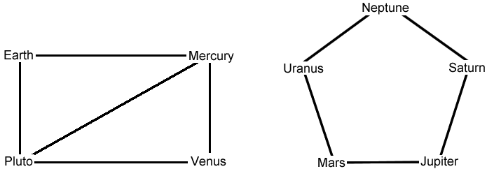

Between the nine planets of the solar system, a cosmic messaging system is introduced. Rockets fly along the following routes: Earth - Mercury, Pluto - Venus, Earth - Pluto, Pluto - Mercury, Mercury - Venus, Uranus - Neptune, Neptune - Saturn, Saturn - Jupiter, Jupiter - Mars and Mars - Uranus. Is it possible to get from Earth to Mars?
Let's draw a diagram: the planets will correspond to the points, and the connecting routes are the lines that do not intersect each other.

Now it is clear that you cannot fly from Earth to Mars.
You cannot.